Développeur · Game dev débutant
Salut, moi c’est Axel.
Étudiant en BTS SIO, je me forme au développement web et au jeu vidéo. Voici mon premier jeu 2D, réalisé de A à Z avec Unity.
a propos de moiJouerVoir comment je l’ai fait
00 · a propos de moi
une presentation breve
Qui suis-je ?
Axel Marcq, étudiant en BTS SIO au lycée André Malraux. Passionné d’informatique, je voudrais devenir développeur de jeux vidéo. J’aime les petites choses du quotidien, les personnes qui m’entourent, et je suis plutôt tranquille : j’apprécie aussi mes moments à moi.
Ce que j’aime dans le développement
C’est un domaine très vaste où il y a toujours quelque chose à apprendre, que ce soit une nouvelle technologie ou une nouvelle façon de développer.
Parcours
Brevet, bac pro CIEL (2022-2025), puis BTS SIO en cours (2025-2027).
B1 · experience profesionnel
travaux réaliser
Phone House Concept, Lens
Création d’un site avec base de données : vitrine, backend, design et analyse, en collaboration avec mon tuteur de stage.
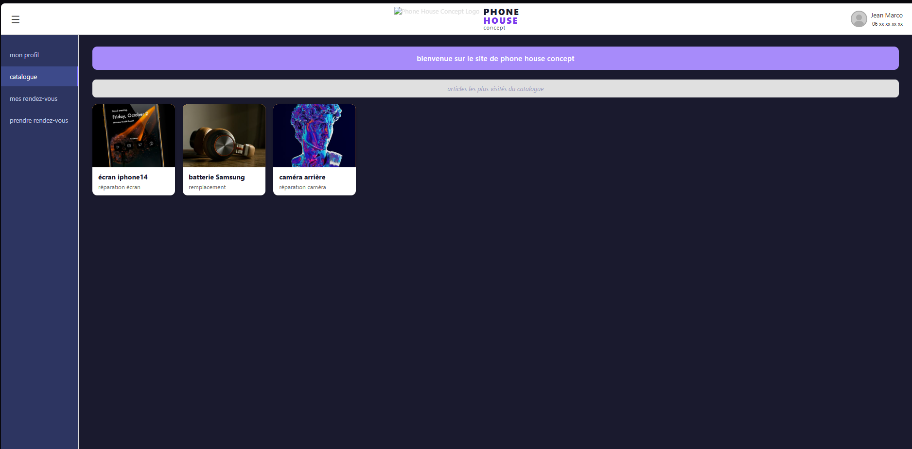
Phone House Concept, Lens
Réparation de smartphones et d’un ordinateur portable en atelier.
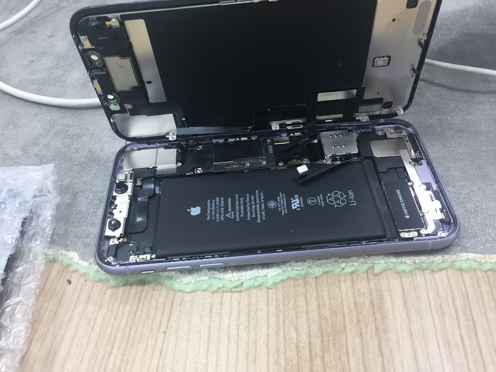
Sonolens Sonorisation, Lens
Câblage d’enceintes et d’une table de mixage, réparation d’une machine à fumée.
Initiative solidaire, Lens
Réparation mécanique : moteur, triangles de suspension, feux de croisement et roues.
01 · Le jeu
space-survivors
Un survival spatial 2D, mon premier projet sur Unity.
02 · Mon rôle
Ce que j’ai fait moi-même
Programmation du vaisseau, des ennemis et obstacles, et des collisions. Les assets (sprites, sons, effets) sont faits par moi, d’après une formation Unity Learn pour apprendre à coder un jeu 2D sur Unity.
03 · Les difficultés
Ce qui m’a fait progresser
Comprendre les machines à états
J’ai étudié le Gamekit2D pour comprendre comment un personnage passe d’un état à un autre avec l’Animator et les StateMachineBehaviour. Grâce à cela, j’ai pu réaliser un deuxième projet qui me sert de modèle et de base pour mes futurs projets de jeux vidéo : il me permet d’animer un personnage, ou encore de mettre une musique d’ambiance et des bruitages d’animations et de mouvements.
Du build éditeur au build web
Un jeu qui marche dans l’éditeur n’est pas forcément prêt pour le web. En effet, j’ai eu beaucoup de mal à l’intégrer dans ce portfolio, car un problème de compression m’empêchait de le faire tourner n’importe où. Heureusement, la solution a été trouvée grâce à Unity Play, car c’est la configuration recommandée dans la documentation de Unity pour faire tourner un jeu web.
04 · Le processus
Du prototype au jeu publié
Premier prototype : un carré qui bouge.
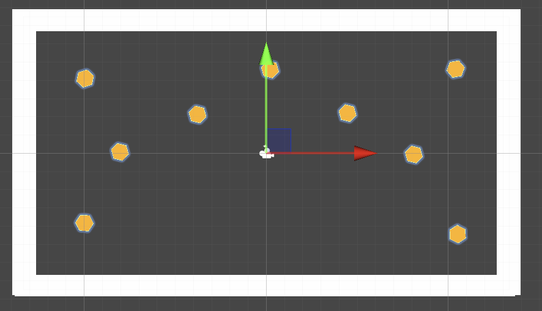
Ajout du vaisseau que l’on contrôle.
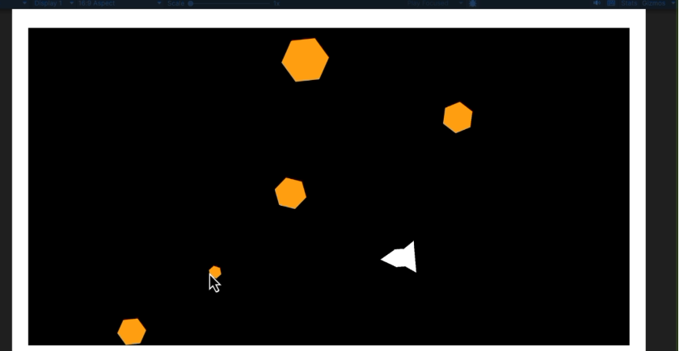
Version à compléter avant de la publier sur Unity Play.
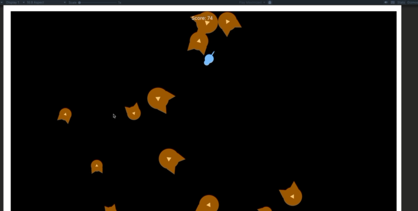
Préparation d’un nouveau jeu.
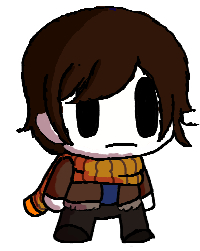
05 · Prochain projet
Un prototype en préparation
Un deuxième jeu, encore au stade du dessin : [nom du prototype, genre, idée en une phrase].
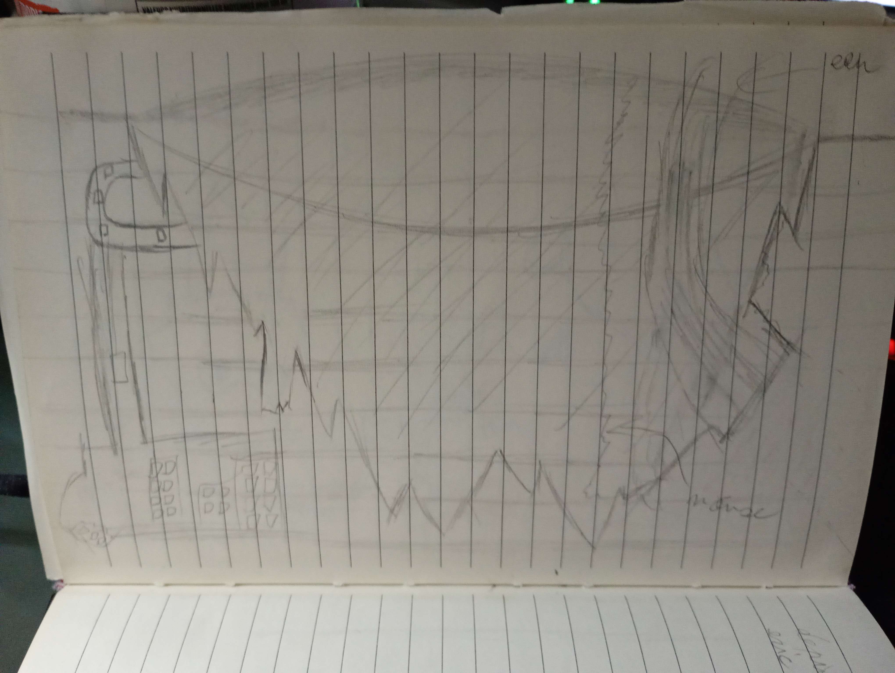
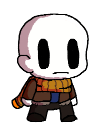
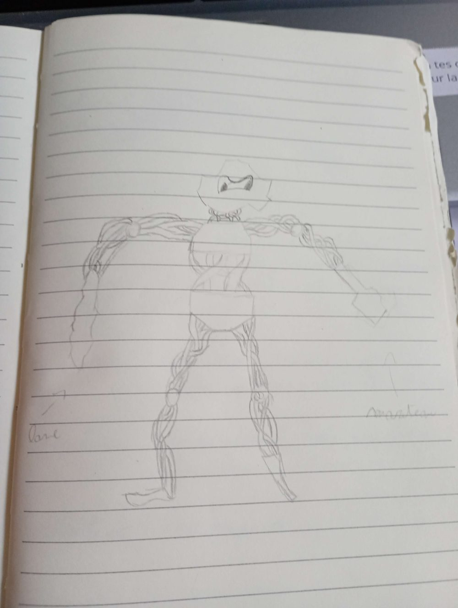
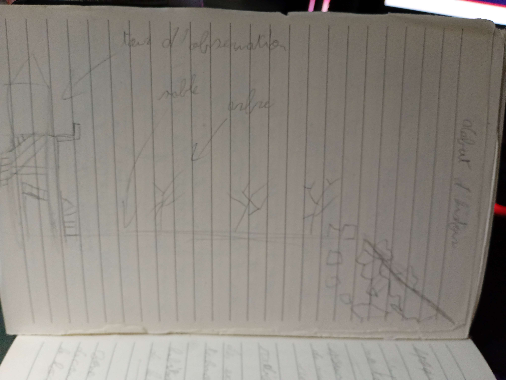
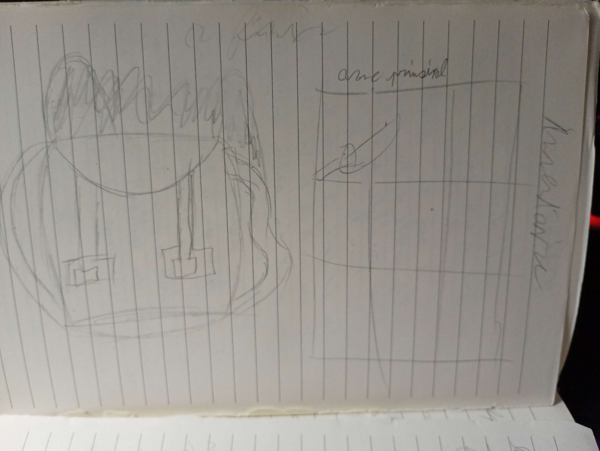
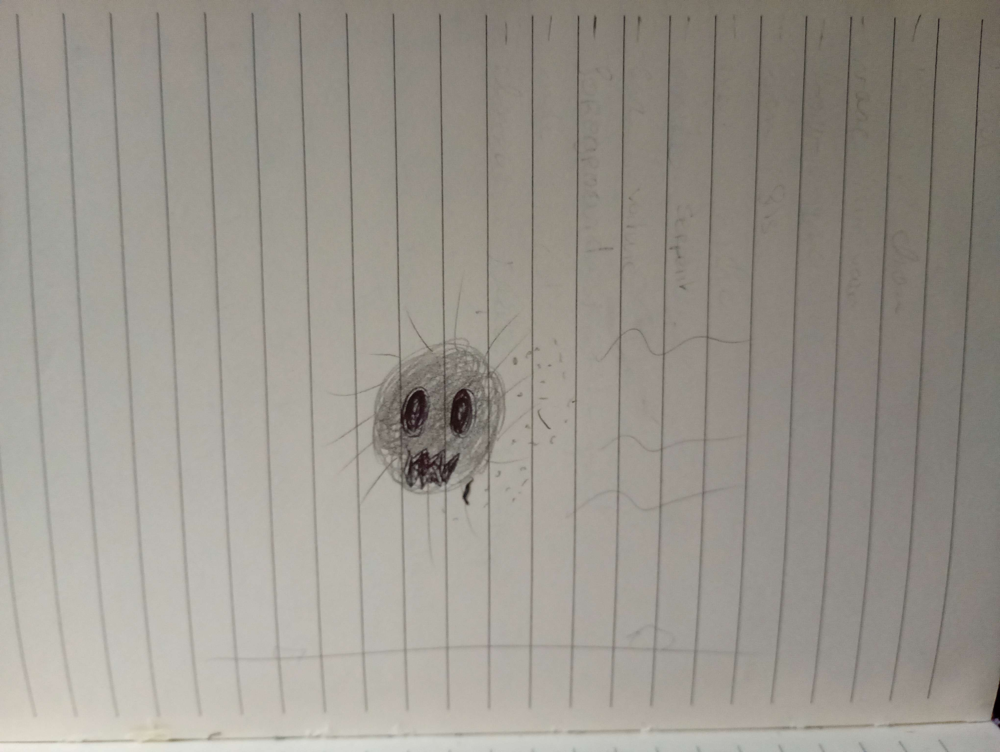
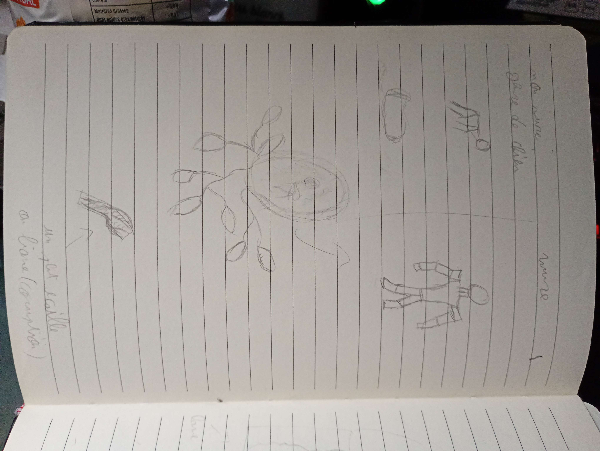
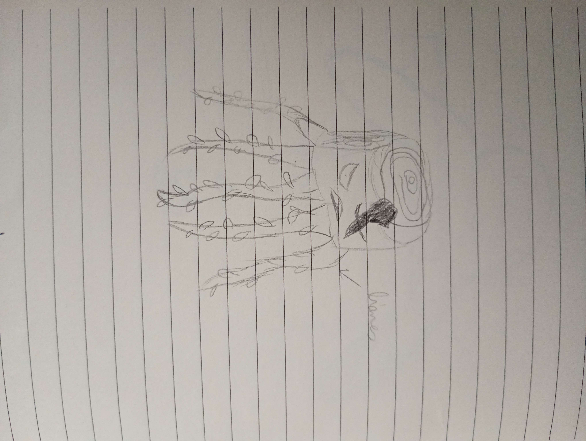